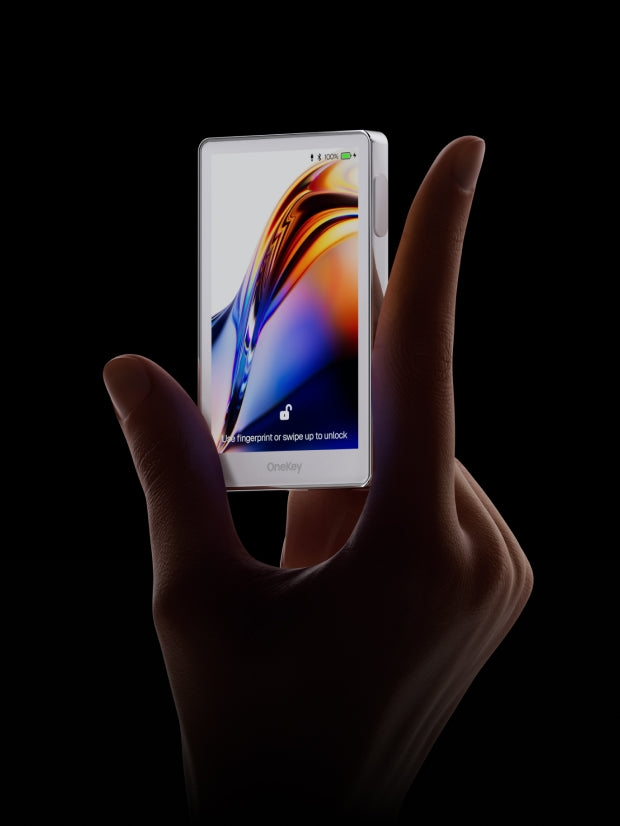
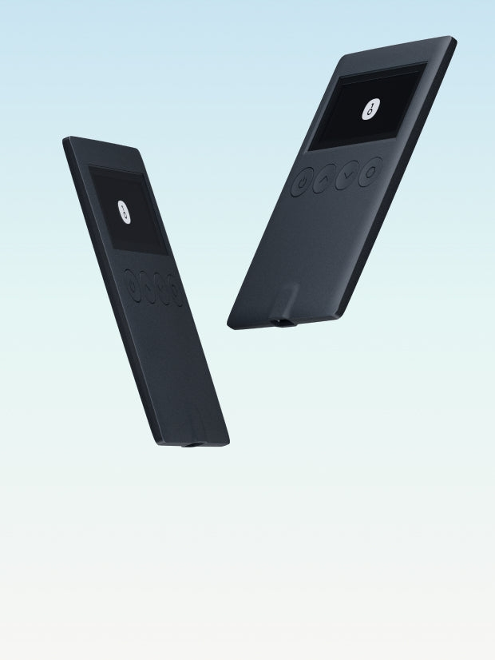

ONEKEY 使用整理
从选择产品、初始化钱包，到使用 OneKey App，这里用容易理解的方式整理常见操作。
先了解 OneKey、硬件钱包和开源。
先认识 OneKey、OneKey App 和硬件钱包。
了解硬件钱包是什么，以及它和软件钱包的区别。
了解 OneKey 开源的意义，以及普通用户需要知道什么。
根据自己的需要选择产品，再查看 OneKey 官网的详细介绍。

大屏触摸、指纹解锁和多种连接方式，适合希望获得完整硬件体验的用户。

轻薄便携，支持蓝牙和 USB-C，适合日常使用。
无电池设计，适合长期保存资产。
无电池的比特币专用版本，适合只使用 Bitcoin 的用户。
NFC 加密备份卡，适用于 OneKey App 和 OneKey Pro。
钛合金恢复短语备份工具，适合长期保存恢复短语。
面向需要更多钱包管理支持的用户，具体服务以官网介绍为准。
先从这些常见问题开始了解。
连接 OneKey App 或电脑时遇到问题，可以先查看排查步骤。
了解这些信息分别是什么，以及如何安全保管。
了解这一功能的基本作用和使用条件。
以下链接均为 OneKey 官方网站。